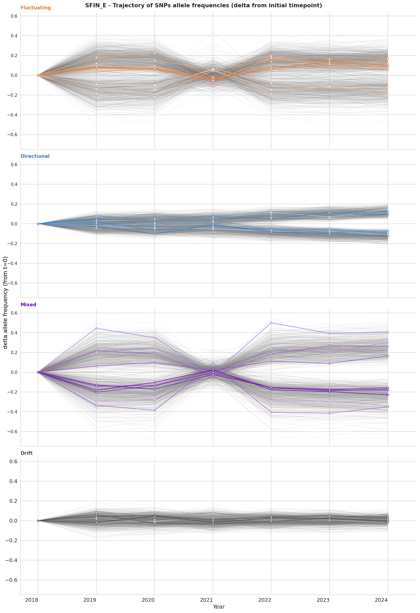
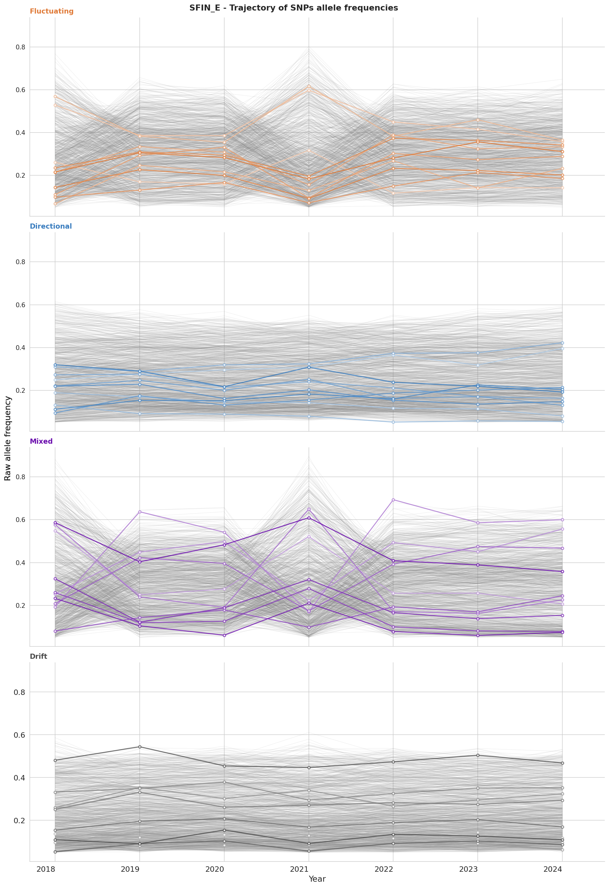
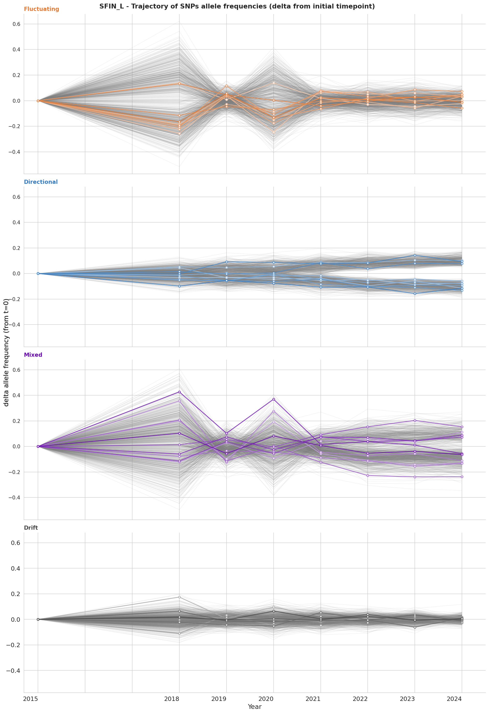
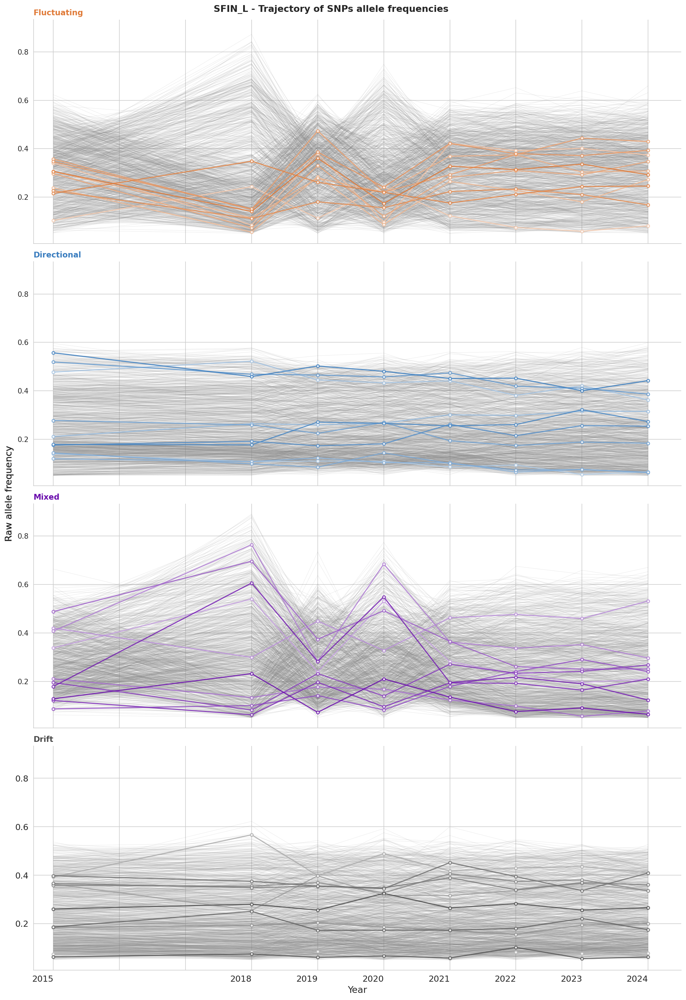
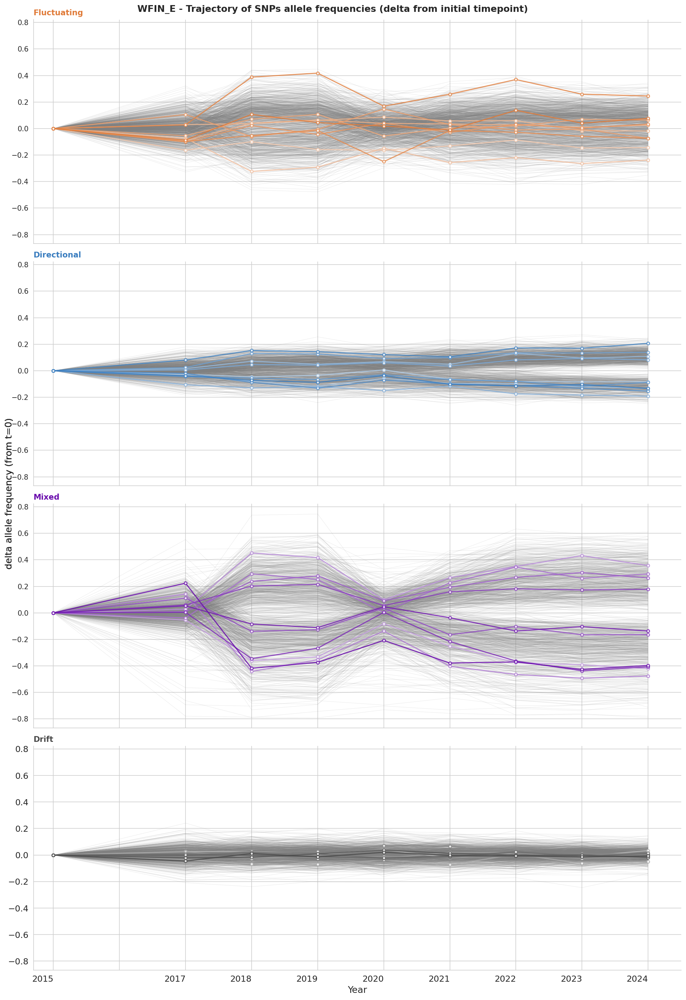
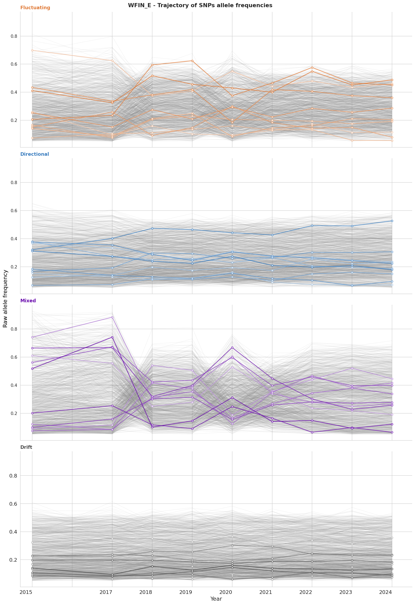
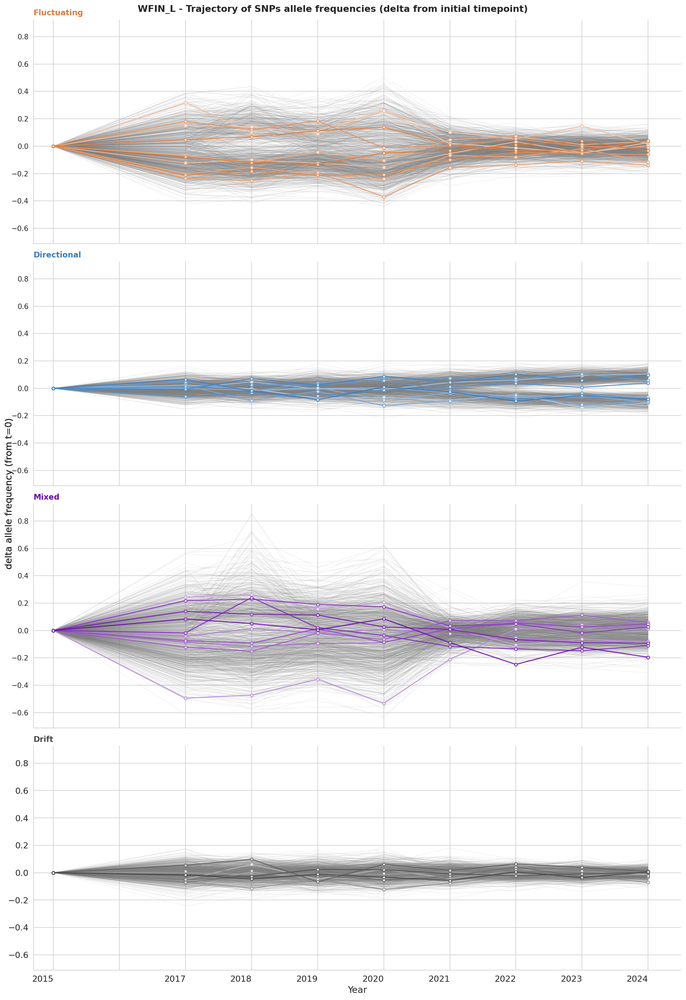
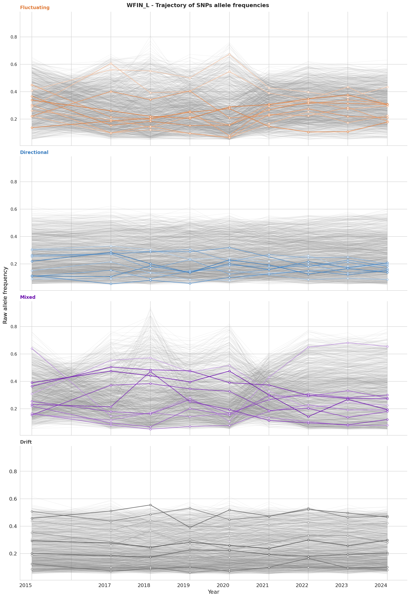

| Category | LRT1 | LRT2 | Description |
|---|---|---|---|
| Drift | ns | ns | No departure from drift |
| Directional | sig | ns | Linear trend, no oscillation |
| Fluctuating | ns | sig | Oscillation, no net directional trend |
| Mixed | sig | sig | Directional trend + oscillation |
FDR p-value: 0.05 - LRT1: directional vs drift - LRT2: saturated vs drift
Allele frequency trajectories per selection category - top 10 SNPs by p-value are highlighted and the next 1000 are in grey.
Allele frequency change relative to the initial timepoint, (Δp = pt − p0). Removes the effect of initial allele frequency making trajectories directly comparable (ranked by FDR-adjusted p-value).
Raw allele frequency trajectories (p) across all years for SNPs per selection category (ranked by FDR-adjusted p-value).







